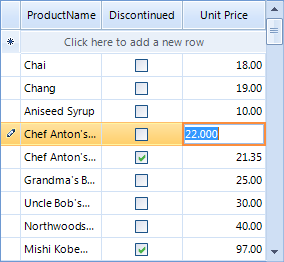

GridViewDecimalColumn
GridViewDecimalColumn allows decimal data to be displayed and edited. GridViewDecimalColumn can be bound to fields of any numeric type.

[C#] Adding GridViewDecimalColumn
GridViewDecimalColumn decimalColumn = new GridViewDecimalColumn();
decimalColumn.Name = "DecimalColumn";
decimalColumn.HeaderText = "Unit Price";
decimalColumn.FieldName = "UnitPrice";
decimalColumn.DecimalPlaces = 3;
radGridView1.MasterTemplate.Columns.Add(decimalColumn);
[VB.NET] Adding GridViewDecimalColumn
Dim decimalColumn As New GridViewDecimalColumn()
decimalColumn.Name = "DecimalColumn"
decimalColumn.HeaderText = "Unit Price"
decimalColumn.FieldName = "UnitPrice"
decimalColumn.DecimalPlaces = 3
RadGridView1.MasterTemplate.Columns.Add(decimalColumn)
Setting a default value for empty cells
You may provide a default value using the following code:
[C#] Setting the default value for empty cells
void radGridView1_CellEditorInitialized(object sender, GridViewCellEventArgs e)
{
GridSpinEditor spinEditor = this.radGridView1.ActiveEditor as GridSpinEditor;
if (spinEditor != null)
{
if (spinEditor.Value == null)
{
spinEditor.Value = 0.0;
}
}
}
[VB.NET] Setting the default value for empty cells
Private Sub RadGridView1_CellEditorInitialized(ByVal sender As Object, ByVal e As Telerik.WinControls.UI.GridViewCellEventArgs)
Dim spinEditor As GridSpinEditor = TryCast(Me.RadGridView1.ActiveEditor, GridSpinEditor)
If spinEditor IsNot Nothing Then
spinEditor.Value = 0
End If
End Sub
Disable the up and down buttons of the spin editor
The code below demonstrates how you can disable the up and down arrow buttons. Using the commented code you can completely hide them.
[C#] Disable up and down arrow buttons
void radGridView1_CellEditorInitialized1(object sender, GridViewCellEventArgs e)
{
GridSpinEditor spinEditor = this.radGridView1.ActiveEditor as GridSpinEditor;
((GridSpinEditorElement)spinEditor.EditorElement).ShowUpDownButtons = false;
}
[VB.NET] Disable up and down arrow buttons
Private Sub RadGridView1_CellEditorInitialized1(ByVal sender As Object, ByVal e As Telerik.WinControls.UI.GridViewCellEventArgs)
Dim spinEditor As GridSpinEditor = TryCast(Me.RadGridView1.ActiveEditor, GridSpinEditor)
If spinEditor IsNot Nothing Then
Dim element As GridSpinEditorElement = spinEditor.EditorElement
element.ShowUpDownButtons = False
End If
End Sub
Setting decimal places
The rich API of RadGridView allows you to define one value for the decimal places
that should be shown in the spin editor of the column and another value for the cells of the column.
Setting decimal places to the spin editor
You can define how many places after the decimal point the value in the spin editor should have
by setting the DecimalPlaces property of GridViewDecimalColumn:
[C#]
decimalColumn.DecimalPlaces = 3;
[VB.NET]
decimalColumn.DecimalPlaces = 3
Setting decimal places to the column cells
In order to define how the values should be displayed by the cells
of the GridViewDecimalColumn in the sense of their decimal places,
we should set the FormatString property of the column:
[C#]
decimalColumn.FormatString = "{0:N2}";
[VB.NET]
decimalColumn.FormatString = "{0:N2}"
Here is the result of setting the DecimalPlaces property to 3 and the FormatString property to {0:N2}:

For a list of the standard numeric format strings, see
Standard Numeric Format Strings